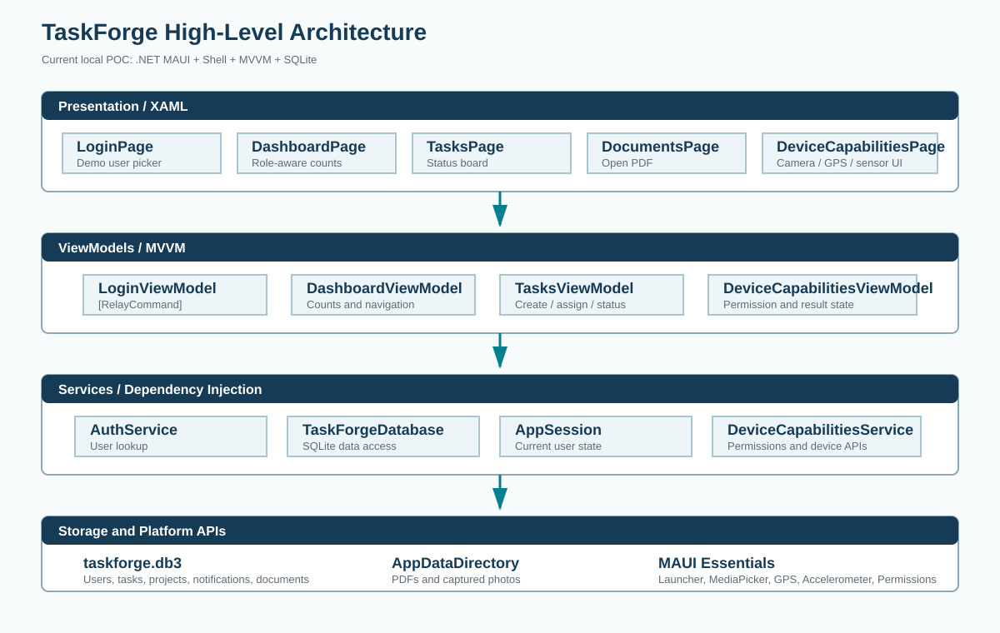

POC detail and high-level architecture for the TaskForge application.
Prepared: 10 September 2026
TaskForge is a cross-platform task and project management application. The POC demonstrates local data storage, role-aware task views, MVVM screens, Shell navigation, and device capability access.
| Area | Current implementation |
|---|---|
| User access | Simple demo-user selection with in-memory session state and logout. |
| Task management | Create, assign, view, filter, and update task status. |
| Dashboard | Shows real task counts from SQLite. Managers and administrators see all tasks; employees see assigned tasks. |
| Documents | Displays the bundled project brief and opens the PDF using the platform launcher. |
| Device capabilities | UI for camera capture, GPS lookup, and accelerometer readings with permission feedback. |
| Storage | Local SQLite database at FileSystem.AppDataDirectory/taskforge.db3. |

Dependency injection: MauiProgram registers services, ViewModels, and pages. Navigation: AppShell defines Login, Dashboard, Tasks, Projects, Team, Notifications, Documents, Profile, and Device Capabilities routes.
| Feature | Behavior |
|---|---|
| Task counts | Administrators, project managers, and team leads use all task rows. Employees use rows assigned to their user ID. |
| Task board | Shows title, description, due date, visible status, and status picker. |
| Task creation | Authorized users create tasks through AddTaskCommand, which inserts into SQLite and creates a notification. |
| Status updates | Picker changes update the TaskItem status in SQLite. |
| PDF document | The bundled project-brief.pdf is copied to app storage and opened with Launcher.OpenAsync. |
| Notifications | Assignment notifications are stored and can be marked read. |
| Capability | Screen behavior |
|---|---|
| Camera | Requests camera permission, captures a photo, saves it in app storage, and displays the result. |
| GPS | Requests location permission and displays latitude and longitude. |
| Accelerometer | Starts and stops monitoring and displays live X, Y, and Z values. |
| Platform styling | Android and iOS Entry handler mapper examples are registered in MauiProgram. |
| Area | Files |
|---|---|
| Database | FieldPro/Data/TaskForgeDatabase.cs FieldPro/Services/ITaskForgeDataService.cs |
| Task board | FieldPro/ViewModels/TasksViewModel.cs FieldPro/Views/TasksPage.xaml |
| Dashboard | FieldPro/ViewModels/DashboardViewModel.cs FieldPro/Views/DashboardPage.xaml |
| Documents | FieldPro/Views/DocumentsPage.xaml.cs FieldPro/Resources/Raw/project-brief.pdf |
| Device UI | FieldPro/ViewModels/DeviceCapabilitiesViewModel.cs FieldPro/Views/DeviceCapabilitiesPage.xaml |
| Startup | FieldPro/MauiProgram.cs FieldPro/AppShell.xaml |